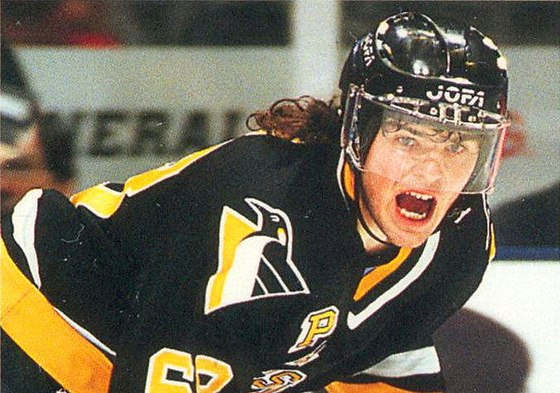

Jaromír Jágr byl draftován týmem Pittsburgh Penguins jako celkově pátá volba 1. kola draftu v roce 1990. Jágrův otec byl původně proti, aby jeho syn hrál v 18 letech v zámoří, a to mimo jiné byl jeden z hlavních důvodů, proč byl draftován až jako číslo pět. Krom Pittsburghu, v osobě nového trenéra týmu Boba Johnsona, o něj měl velký zájem i skaut týmu Philadelphia Flyers Inge Hammarström. Philadephia měla právo volby jako čtvrtá (před Pittsburghem), ale místo Jágra tým vyvolal jméno Mike Ricci, který byl před draftem experty pasován jako číslo jedna. Hammarströmovi se totiž nepodařilo přehlasovat své americké kolegy (brali straku v hrsti). V roce 1991 a 1992 s „Tučňáky“ vyhrál Stanley Cup a stal se nejmladším hráčem v historii NHL (19 let), který vstřelil branku ve finálovém utkání Stanley Cupu.
V sezóně 1994/1995 vyhrál Jaromír Art Ross Trophy, která se uděluje nejlepšímu hráči kanadského bodování. V boji o ní remizoval s Ericem Lindrosem, a tak o výhře musel rozhodnout počet nastřílených branek. Ty rozhodly ve prospěch Jágra (Jágr – 32; Lindros – 29). Další rok Jágr vytvořil nový rekord počtu získaných kanadských bodů evropským hráčem – 149 a jeho 62 gólů a 87 asistencí se stalo dosavadním maximem jeho kariéry. Od sezóny 1997/1998 do sezóny 2000/2001 se Jágrovi podařilo získat 4 Art Ross Trophy v řadě. V roce 1999 obdržel Jaromír Jágr Hart Memorial Trophy, udělovanou novináři a funkcionáři NHL nejužitečnějšímu hráči soutěže, a Lester B. Pearson Award, která se také uděluje nejužitečnějšímu hráči, ale je volena hráči samotnými. V roce 1998 dovedl Jaromír Jágr českou hokejovou reprezentaci na olympijských hrách v Naganu až k vytouženému zlatu.
V sezóně 2000/2001 se Jaromír Jágr nemohl najít a nedařilo se mu. Zároveň musel čelit kritice svého vztahu s trenérem Ivanem Hlinkou.
